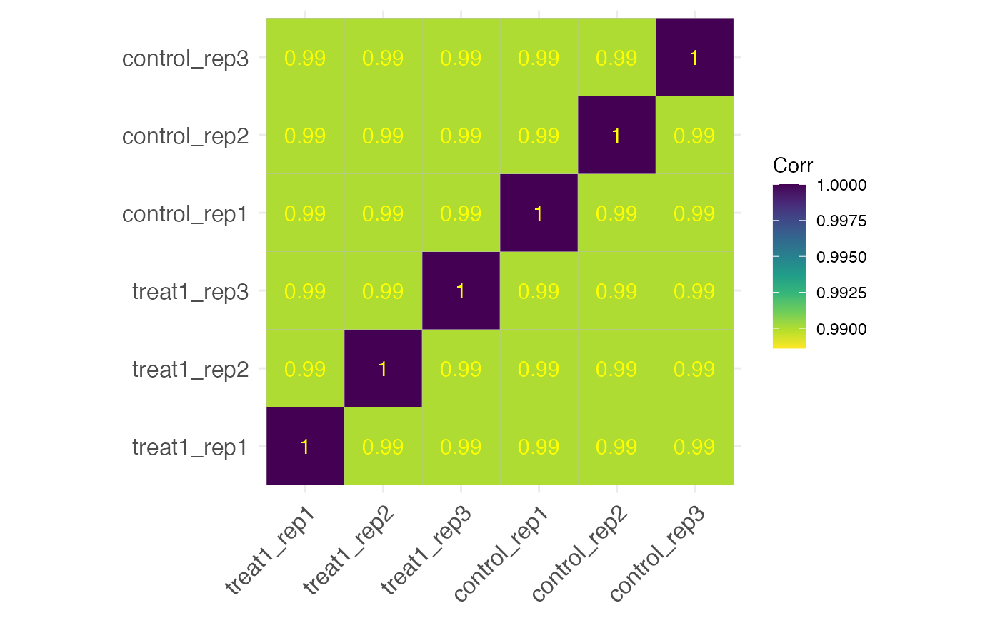

For all (or selected) samples this function generate a correlation heat box type plot.
Usage
get_corr_heatbox(
x,
samples = NULL,
genes = NULL,
corr_method = "pearson",
plot_type = "full",
vis_method = "square",
show_diagonal = TRUE,
show_corr_values = FALSE,
col_corr_values = "yellow",
size_corr_values = 5,
cluster_samples = FALSE,
scale_range = NULL
)Arguments
- x
an object of class parcutils.
- samples
a character vector denoting samples to plot in scatter plot, default
NULL. If set to NULL all samples are accounted.- genes
a character vector denoting genes to consider in scatter plot, default
NULL. If set to NULL all genes are accounted.- corr_method
a character string, default
"pearson", denoting a value for correlation method. Value can be one of these"pearson", "kendall", "spearman".- plot_type
a character string, default
"square", denoting value for plot type. Value can be one of these"full", "lower", "upper".- vis_method
a character string, default
"full", denoting a value type of visualization. Value can be one of these"square", "circle".- show_diagonal
a logical, default
TRUE, denoting whether to show diagonal values or not.- show_corr_values
a logical, default
TRUE, denoting whether to show corr values or not.- col_corr_values
a character string, default
"yellow", denoting a valid color string for corr values.- size_corr_values
a numeric, default
5, denoting a size for corr values.- cluster_samples
a logical, default
TRUE, denoting whether to cluster samples or not.- scale_range
a numeric vector of length two denoting minimum and maximum value for the color scale, default
NULL.
Examples
count_file <- system.file("extdata","toy_counts.txt" , package = "parcutils")
count_data <- readr::read_delim(count_file, delim = "\t")
#> Rows: 5000 Columns: 10
#> ── Column specification ────────────────────────────────────────────────────────
#> Delimiter: "\t"
#> chr (1): gene_id
#> dbl (9): control_rep1, control_rep2, control_rep3, treat1_rep1, treat1_rep2,...
#>
#> ℹ Use `spec()` to retrieve the full column specification for this data.
#> ℹ Specify the column types or set `show_col_types = FALSE` to quiet this message.
sample_info <- count_data %>% colnames() %>% .[-1] %>%
tibble::tibble(samples = . , groups = rep(c("control" ,"treatment1" , "treatment2"), each = 3) )
res <- run_deseq_analysis(counts = count_data ,
sample_info = sample_info,
column_geneid = "gene_id" ,
group_numerator = c("treatment1", "treatment2") ,
group_denominator = c("control"))
#> ℹ Running DESeq2 ...
#> converting counts to integer mode
#> Warning: some variables in design formula are characters, converting to factors
#> estimating size factors
#> estimating dispersions
#> gene-wise dispersion estimates
#> mean-dispersion relationship
#> final dispersion estimates
#> fitting model and testing
#> ✔ Done.
#> ℹ Summarizing DEG ...
#> ℹ Done.
get_corr_heatbox(res,samples = c("treatment1","control"),cluster_samples = FALSE,show_corr_values =TRUE,
size_corr_values = 4)
